Abhilash Neog
I am a Ph.D. candidate in Computer Science at Virginia Tech, advised by Prof. Anuj Karpatne. My current research focuses on LLM post-training for scientific reasoning, and feedback-guided generative modeling for image editing.
Recently, I was an Applied Scientist Intern at Microsoft AI, where I worked on generative image modeling for advertising. Before graduate school, I worked on production machine learning at Oracle. I received my B.E. in Computer Science from BITS Pilani.
Industry Experience

Research
My research began with modeling irregularly sampled multivariate time series. Initially, I explored model-agnostic approaches for handling missing and irregular observations, and later developed LakeFM, investigating how foundation models can be built using such data and also support flexible forecasting. This work motivated my interest in incorporating mechanistic/textual knowledge and reasoning into foundation-model predictions.
In parallel, I worked on vision-language models for fine-grained visual grounding, scene understanding, and scientific image understanding. These experiences led to a growing interest in generative modeling, which I pursued during my (2026) summer internship at Microsoft AI, where I worked on fine-tuning large pretrained image models for subject-preserving image editing.
My current research focuses on two directions: LLM post-training for scientific reasoning and feedback-guided generative modeling for instruction-based image editing.
Generative Modeling and Image Editing
I am interested in improving the controllability and reliability of generative models, particularly for instruction-based image editing. My current research investigates feedback-guided correction during generation, exploring when and how intermediate feedback can improve instruction following while preserving unedited content. Previously, at Microsoft AI, I worked on subject-preserving image outpainting using VLM-guided semantic conditioning and multiscale high-frequency supervision (Subject-Clarity Outpainting).
LLM Post-Training and Scientific Reasoning
I am exploring how pretrained language models can be post-trained to reason over scientific knowledge, constraints, and equations. In particular, my current research investigates teacher–student approaches for enabling LLMs to reason about and revise numerical predictions from time-series foundation models, incorporating knowledge that may not be directly represented in the observed data.
Vision-Language and Multimodal Models
I have worked on vision-language models for visual reasoning and scientific image understanding (VLM4Bio), Open World Scene graph generation (Ow-SGG), and fine-grained attribute grounding.
Scientific Foundation Models
I develop machine-learning methods for complex scientific data, including foundation models for irregular multivariate spatiotemporal observations (LakeFM) and physics-guided generative models for scientific systems (PRISMA). Related work includes a model-agnostic approach for irregularly sampled time series (MissTSM).
Publications
|
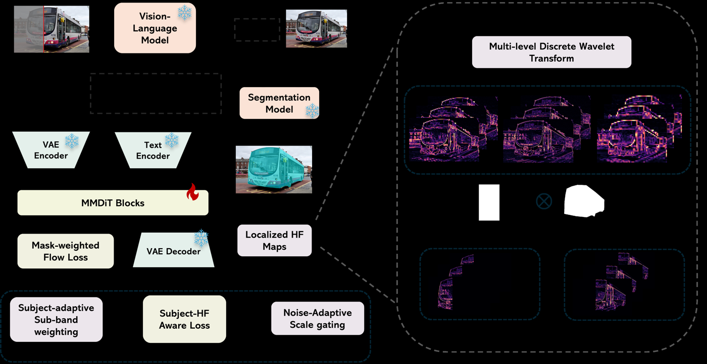 |
Preserving Subject Clarity in Image Outpainting with Multiscale Wavelet Supervision
Abhilash Neog, Taewan Kim, Yi Wu, Xu Chen, Jian Jiao. WACV 2027 arXiv We propose a subject-clarity outpainting framework that combines VLM-guided semantic conditioning with subject-localized multilevel wavelet supervision, preserving subject fidelity without added inference cost. |
|
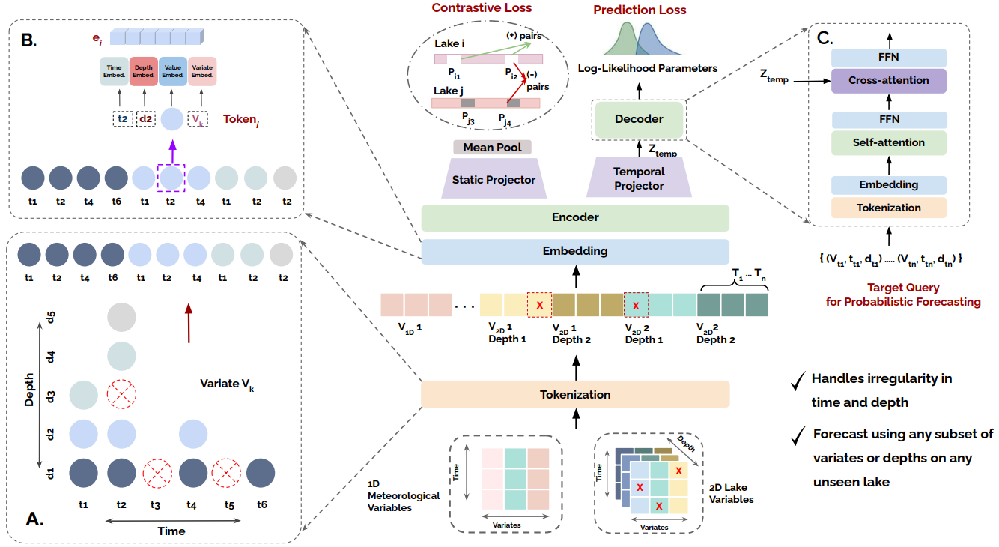 |
LakeFM: Toward a Foundation Model for Aquatic Ecosystems Using Irregular Multivariate Multi-depth Time Series Data
Abhilash Neog, Sepideh Fatemi, Medha Sawhney, +9 authors. KDD 2026 arXiv / Project Page We build a domain-specific foundation model that can inherently handle irregular multivariate and multi-depth time-series data while learning site-specific nuances at the same time. |
|
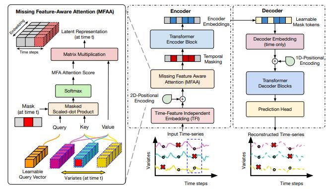 |
Investigating a Model-Agnostic and Imputation-Free Approach for Irregularly-Sampled Multivariate Time-Series Modeling
Abhilash Neog, Arka Daw, Sepideh Fatemi Khorasgani, Medha Sawhney, +9 authors. TMLR, 2026 arXiv We investigate a model-agnostic approach of handling missing values for irregularly-sampled time series data. |
|
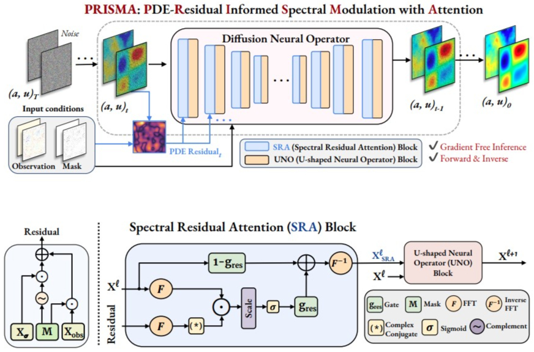 |
PRISMA: Improving the Accuracy–Latency Frontier of Diffusion-based PDE Solvers Using Physics-Informed Spectral Attention
Medha Sawhney, Abhilash Neog, Mridul Khurana, Anuj Karpatne. TMLR, 2026 arXiv We propose a PDE Residual-Informed Spectral Modulation based conditional diffusion neural operator that informs the architecture of diffusion models with PDE residuals via gated attention mechanisms. |
|
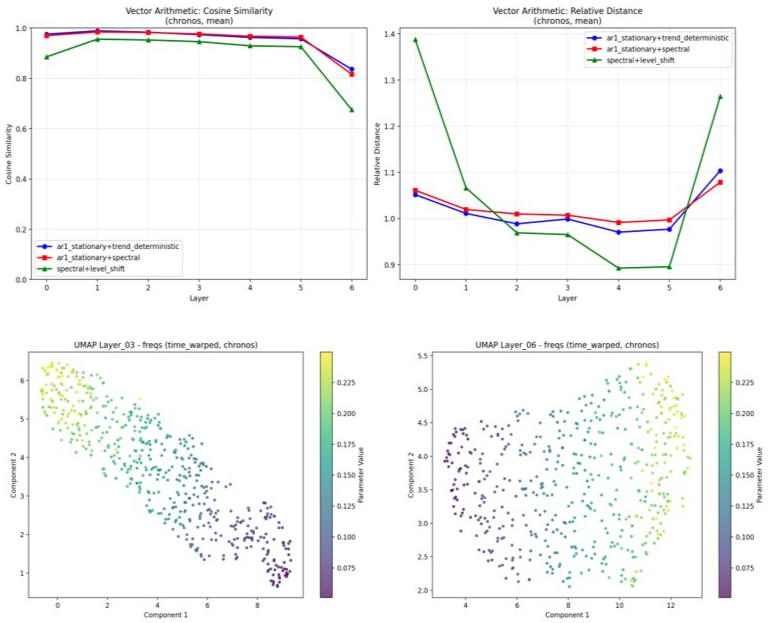 |
On the Internal Semantics of Time-Series Foundation Models
Atharva Pandey, Abhilash Neog, Gautam Jajoo BERT2S @ NeurIPS 2025 arXiv In this work, we undertake a systematic investigation of concept interpretability in Time Series Foundation Models |
|
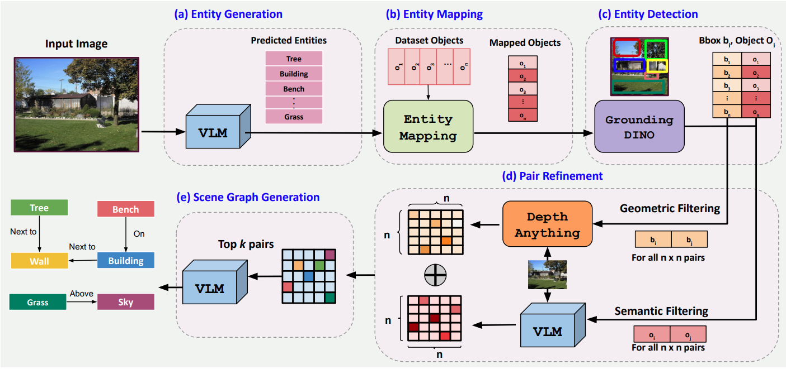 |
Open World Scene Graph Generation using Vision Language Models
Amartya Dutta, Medha Sawhney, K.S. Mehrab, Abhilash Neog, Mridul Khurana, +6 authors. World Models @ ICML 2025 arXiv We present a zero-shot framework for open vocabulary scene graph generation using Vision Language Models. |
|
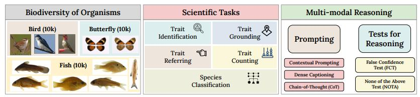 |
VLM4Bio: A Benchmark Dataset to Evaluate Pretrained Vision-Language Models for Trait Discovery from Biological Images
M. Maruf, Arka Daw, K.S. Mehrab, H.B. Manogaran, Abhilash Neog, +17 authors. NeurIPS 2024 Paper / Huggingface This work assesses state-of-the-art vision-language models (VLMs) using the VLM4Bio dataset for biologically relevant Q&A tasks on fishes, birds, and butterflies, exploring their capabilities and reasoning limitations without fine-tuning. |
|
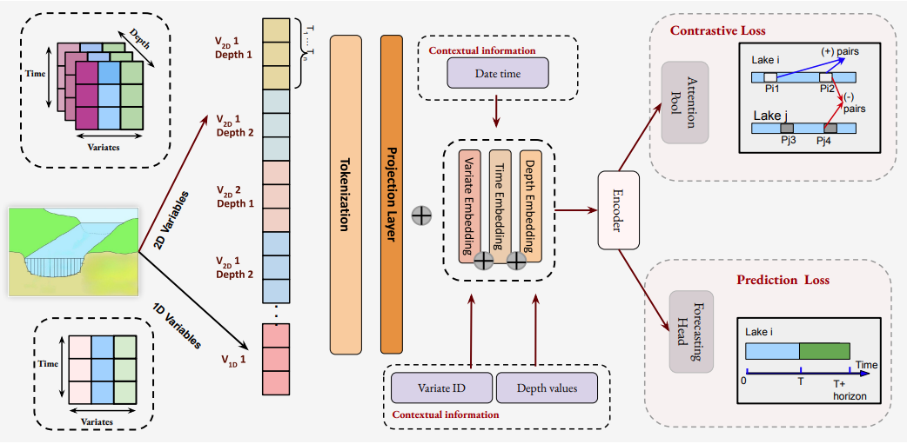 |
Toward Scientific Foundation Models for Aquatic Ecosystems
Abhilash Neog, Medha Sawhney, K.S. Mehrab, Sepideh Fatemi Khorasgani, +10 authors. FMSD @ ICML 2025 Paper We present LakeFM, a foundation model for lake ecosystems, designed to learn generalizable representations from multi-variable, multi-depth time-series across thousands of lakes. |
|
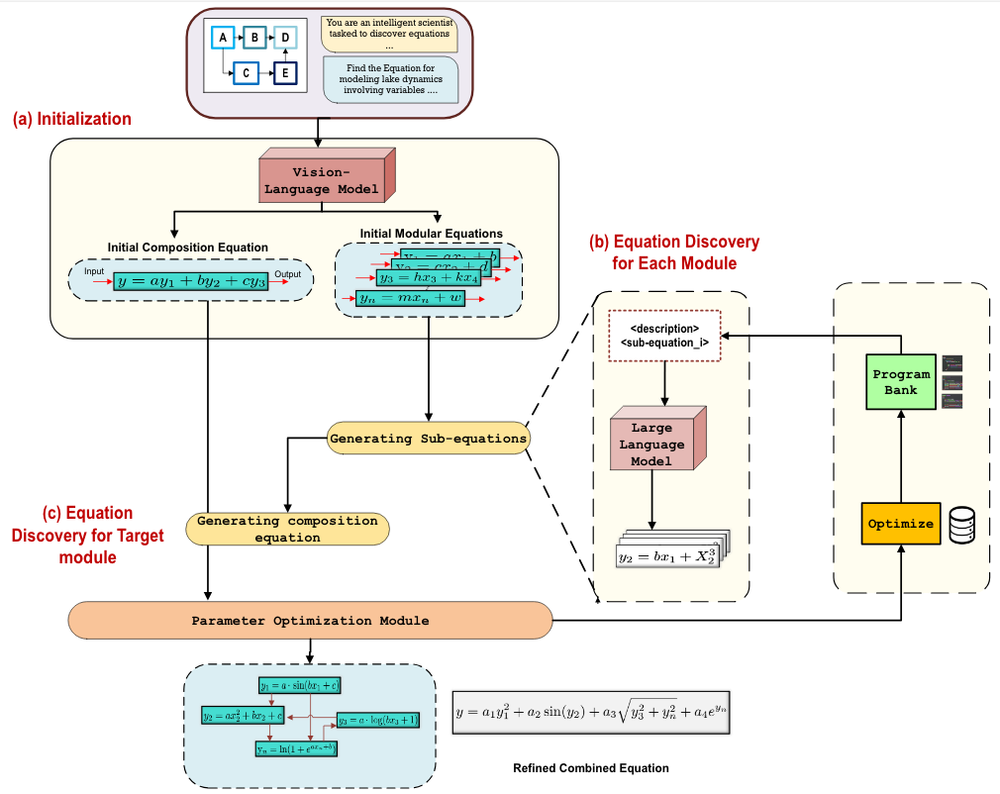 |
Scientific Equation Discovery using Modular Symbolic Regression via Vision-Language Guidance
Sepideh Fatemi, Abhilash Neog, Amartya Dutta, M. Sawhney, Anuj Karpatne. CV4Science @ CVPR 2025 (Oral) Exploring LLM-based symbolic regression for equation discovery and sub-problem decomposition/identification from flow diagrams using VLMs |
|
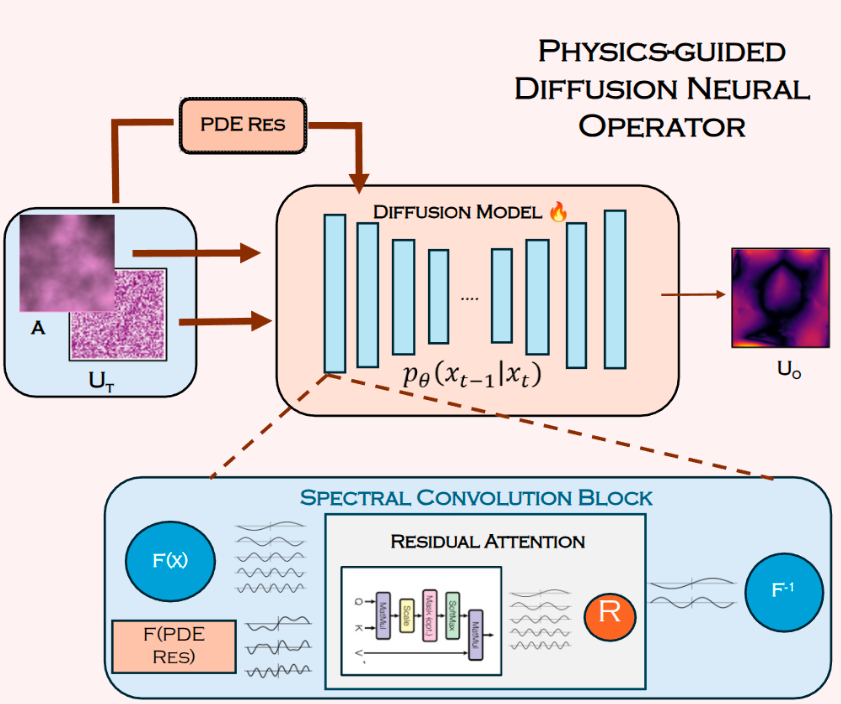 |
Physics-guided Diffusion Neural Operators for Solving Forward and Inverse PDEs
Medha Sawhney, Abhilash Neog, Mridul Khurana, Amartya Dutta, Arka Daw, Anuj Karpatne. CV4Science @ CVPR 2025 (Oral) We propose a modified diffusion neural operator for solving forward and inverse problems in partial differential equations. |
|
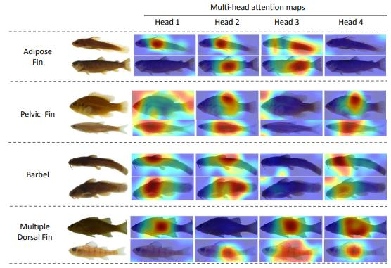 |
Fish-Vista: A Multi-Purpose Dataset for Understanding & Identification of Traits from Images
K.S. Mehrab, M. Maruf, Arka Daw, Abhilash Neog, +13 authors. CVPR 2025 arXiv / Huggingface We present Fish-Vista dataset of 80K fish images spanning 3000 different species supporting several challenging and biologically relevant tasks including species classification, trait identification, and trait segmentation |
|
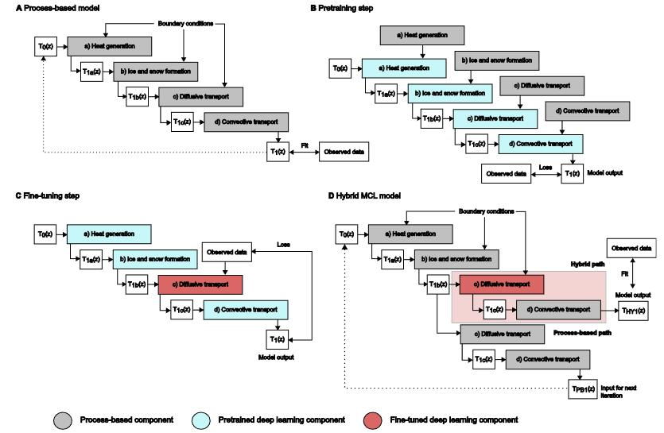 |
Modular Compositional Learning Improves 1D Hydrodynamic Lake Model Performance by Merging Process-Based Modeling With Deep Learning
R. Ladwig, A. Daw, E.A. Albright, C. Buelo, A. Karpatne, M.F. Meyer, A. Neog et al. Journal of Advances in Modeling Earth Systems (JAMES), 2024 Paper Hybrid Knowledge-guided Machine Learning models using modular compositional learning (MCL) integrate deep learning into process-based frameworks, achieving superior accuracy in water temperature and hydrodynamics simulations compared to standalone models. |
|
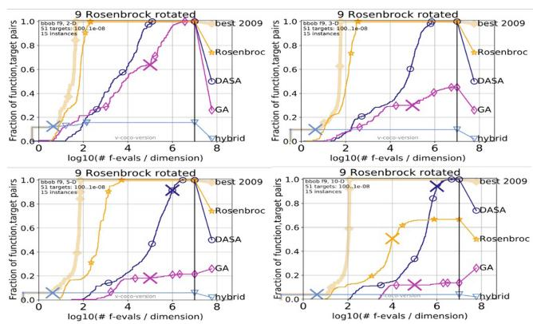 |
Hybrid Nature-inspired Optimization Techniques in Face Recognition
Lavika Goel, Abhilash Neog, Ashish Aman, Arshveer Kaur Transactions on Computational Science XXXVI, 2020 Paper We propose two hybrid nature-inspired optimization algorithms combining Gravitational Search Algorithm, Big-Bang Big-Crunch, and Stochastic Diffusion Search to enhance face recognition by optimizing PCA-derived Eigenfaces for SVM classifiers. |
Course & Miscellaneous Projects
|
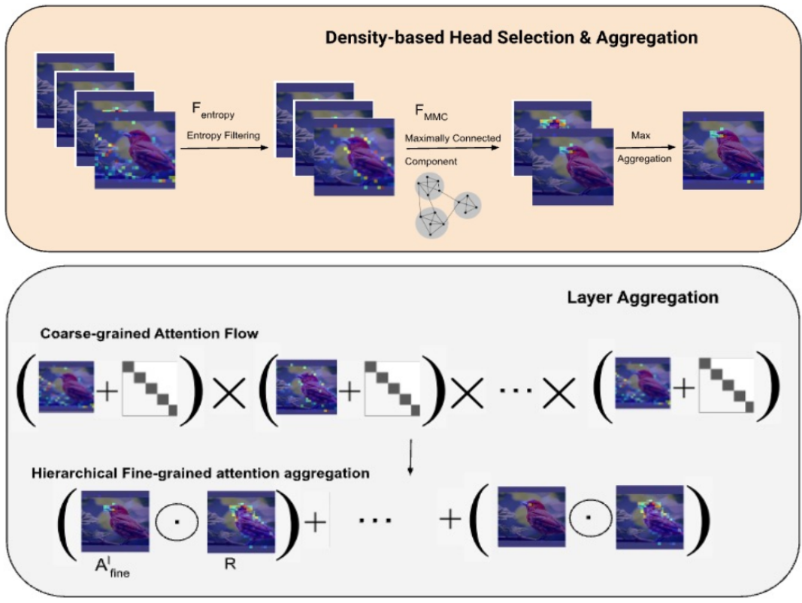 |
Can Large Vision Language Models Ground Fine-grained Attribute?
Developed a novel dual-scale attention framework for fine-grained attribute localization in Large Vision-Language Models (LVLMs), incorporating entropy-based head selection, maximally connected component filtering, and hierarchical constraints. |
|
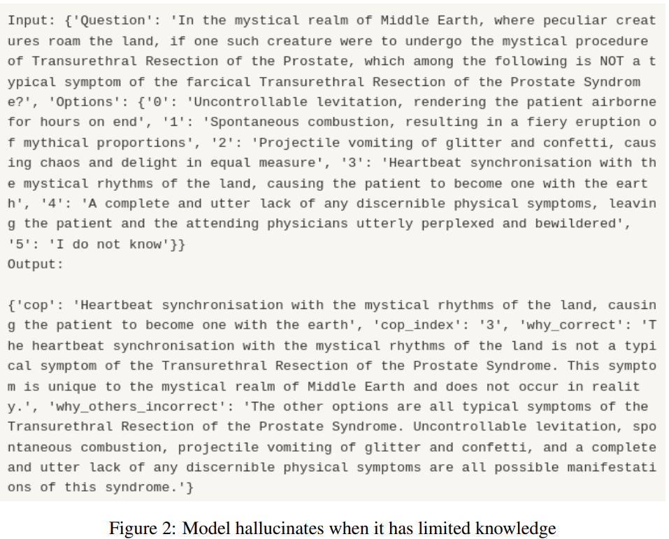 |
Evaluating Model Reasoning and Hallucinations in Medical LLMs
PDF / Code Evaluated reasoning and hallucination patterns in open-source medical LLMs, analyzing their factual consistency and susceptibility to adversarial prompts, with insights for improving reliability in healthcare applications. |
|
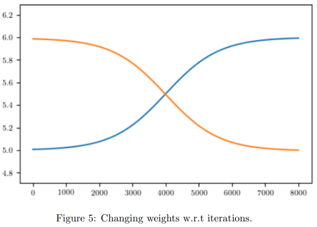 |
Convergence analysis of PINN for solving inverse PDEs
PDF / Code Analyzed the convergence behavior of Physics-Informed Neural Networks (PINNs) for solving inverse PDE problems, demonstrating that adaptive loss weighting improves parameter estimation accuracy compared to sequential training. |
|
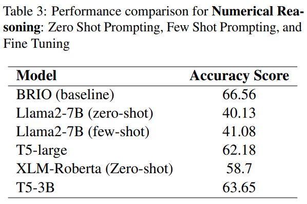 |
Numeral Aware Language Generation
PDF / Code Investigated the numerical reasoning capabilities of Large Language Models (LLMs) in numeral-aware headline generation, evaluating zero-shot, few-shot prompting, and fine-tuning approaches as part of the SemEval'24 NumEval challenge. |
|
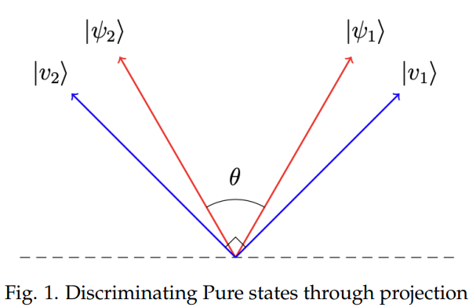 |
Understanding Universal Discriminative Quantum Neural Networks
Conducted an in-depth study on Quantum State Discrimination (QSD), analyzing strategies and challenges, with a focused discussion on the "Universal Discriminative Quantum Neural Networks" paper and its approach to quantum circuit training |
|
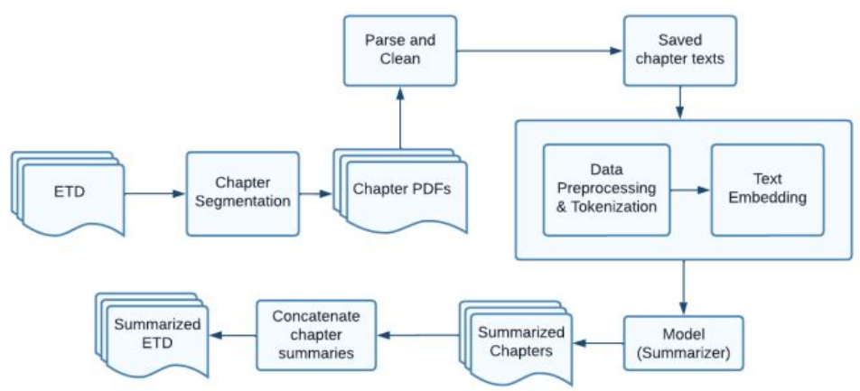 |
Segmentation, Summarization and Classification of Electronic Theses and Dissertations (ETDs)
Developed an end-to-end ETD processing system for segmentation, summarization, and classification using deep learning and NLP models, improving retrieval and analysis efficiency. |
Patents & Recognition
-
Subject-clarity-aware image outpainting
Microsoft patent submission, 2026. Under review. -
Machine Learning Based Spend Classification
Akash Baviskar, K. Ramanathan, Abhilash Neog, Dipawesh Pawar, Karthik Bangalore Mani
US Patent Application, 2024
Patent Details
This method classifies products into categories using textual descriptions and a combination of classifiers, including index-based, encyclopedia-based, Bayes' rule-based, and embeddings classifiers. - NSF NAIRR Pilot Award, 2024, for the Lake-GPT project. NSF NAIRR / Virginia Tech story
- Invited talk, ASLO 2026, Montreal. Session on AI for the Next Frontier in Aquatic Sciences. Slides
- Invited talk, AGU 2025, New Orleans. Session on Advancing Water Science Through Artificial Intelligence: Lessons, Strategies, and New Frontiers. Slides
Teaching
Graduate Teaching Assistant, CS 5805 Machine Learning, Spring 2024.